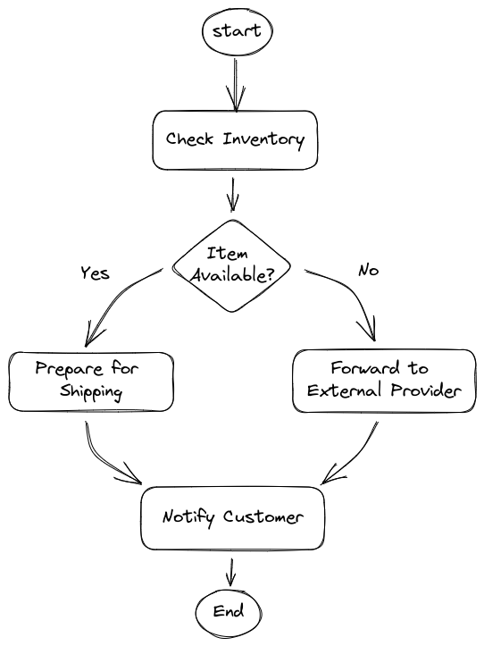
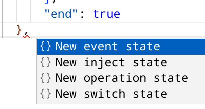
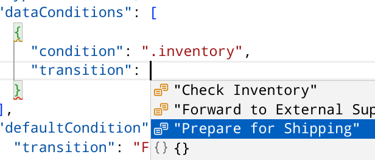
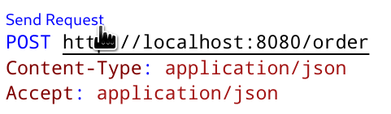
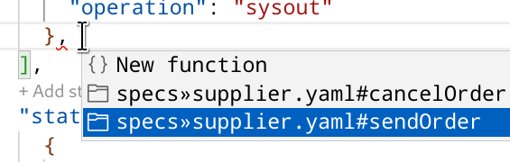

Inventory Logic
In this section, you will expand the workflow logic to manage a first stage of fictional use case.
The use case
| As any other tutorial use case, the situation we are going to consider is somewhat realistic, but for sake of simplicity we are going to oversee many real aspects. The primary goal is to show the key capabilities of the Serverless Workflow specification, please, apologise for the many naiveties that domain experts can easily point out. |
An e-commerce company has to implement the following order management workflow:
-
When a new order come in, they need to check the inventory for the availability of the items. If the items are available the order will be prepared for shipping (picking, packaging, printing label, etc), when the shipping is completed, the shipping department send an event back to the workflow and the customer is notified about the shipping status with usual tracking information.
-
If the item is out of stock, the order will be forwarded to a external supplier who will take care of the shipping procedure, when the supplier ships the order, it also send an event back to the workflow, in such a way the workflow can continue and send the notification to the customer.
-
As long as the order is not shipped, the customer has the option of cancelling the order by also cancelling the shipping.
The following picture shows an high level design:

The final use case will be implemented going through a set consecutive sprints[1], in every sprint you are going to experience a new feature of the Serverless Workflow specification.
The Inventory Sprint
In this sprint we are going to add the check inventory operation and based on the outcome call a prepare for shipping or forward to external supplier.
-
Open
order.sw.jsonfile -
Replace
Order ReceivedwithCheck Inventoryin the following places:-
start
-
name of the state
-
the message
To change all occurrences in one shot: select Order Received, press twiceCTRL-D, perform the rename, then pressESC
-
-
Add after the
functionRefobject the following logic:"actionDataFilter": { "fromStateData": ".", "results": "{inventory: .item | test(\"0+\") }" }This code mocks up the check inventory logic:
actionDataFilteris a feature to manipulate the workflow data (state scoped), in practical terms it gets theitemvalue and create a new datainventorywhich value can be true or false if theitemcontains one or more0The previous logic is an example of the JQ expression language which plays a key role in Serverless Workflow. To evaluate and manipulate data is crucial to gaining some familiarity with this language Understanding JQ expressions -
Move the cursor to the end of previous state, type a comma and you should get the suggestion pop up
 -
Select
New switch state, then edit thenameand thecondition:{ "name": "Item Available?", "type": "switch", "dataConditions": [ { "condition": ".inventory", "transition": "Transition to another state if condition is true" } ], "defaultCondition": { "transition": "Default transition of the workflow" } } -
Go back to
Check Inventorystate and replace the end declaration with transition to point to the switch state:"transition": "Item Available?" -
After the switch state definition add a new operation state for
Prepare for Shipping:{ "name": "Prepare for Shipping", "type": "operation", "end": true, "actions": [ { "name": "printAction", "functionRef": { "refName": "printMessage", "arguments": { "message": "\"Prepare for Shipping\"" } } } ] }, -
Add an operation state for
Forward to External Supplier:{ "name": "Forward to External Supplier", "type": "operation", "end": true, "actions": [ { "name": "printAction", "functionRef": { "refName": "printMessage", "arguments": { "message": "\"Forward to External Supplier\"" } } } ] }, -
Update the switch state to point to the correct operation states:
-
for the conditional branch set the transition to
Prepare for Shipping -
for the default condition set the transition to
Forward to External Supplier
-
This is the expected result:
|
You can compare your resulting workflow with the expected solution at this stage in |
Test the workflow logic
Before connecting the workflow to an external service is a good idea to probe it in isolation (i.e. smoke test): in fact, the current actions only print messages in the console.
-
Open the http probing file:
src/test/resources/probe.http -
Identify the first POST request in the file and just above it click on
Send Request
-
Check the results and the workflow execution in the quarkus console
-
Repeat the previous 2 steps to check that the workflow execution follow the other branch (Forward to External Supplier)
Call an external REST service
Serverless Workflow have a straightforward integration with OpenAPIs.
For sake of simplicity, the project contains a Simple REST resource which exposes two operations:
-
sendOrderto send order to a supplier -
cancelOrderto send an order cancellation to a supplier
The link between the workflow and the rest service is the OpenAPIs spec file.
The Serverless Workflow expects to find the file in the src/main/resources/specs folder and since the startup project already provide it, you can easily consume it from workflow definition file:
-
Inspect the OpenAPI yaml file at
src/main/resources/specs/supplier.yaml -
Open workflow definition
src/main/resources/order.sw.json -
Go in the
functionsdefinition section, add a comma to the last definition the editor will propose you the two operation available, accept the suggestion and add both definitions -
Identify the
Forward to External Supplierstateyou can click on state in the workflow diagram and the tool will bring you on the state definition line in the textual representation. -
Replace the print action with the function call:
{ "name": "sendOrderRestCall", "functionRef": { "refName": "sendOrder", "arguments": { "supplier-id":"\"1\"", "content":".orderId" } } }The rest service is invoked with two arguments, a dummy supplier-id(1) and theorderId.
|
You can compare your resulting workflow with the expected solution at this stage in |
Test the external REST service
Repeat the test you did before.
In the log file you should notice a different output coming from the REST implementation:
2022-12-22 12:58:02,859 INFO [org.kie.kog.ser.wor.dev.DevModeServerlessWorkflowLogger] (executor-thread-0) Triggered node 'Forward to External Supplier' for process 'order' (e6cdca5b-795c-407a-8c4d-a58ef3e59bc4)
2022-12-22 12:58:02,860 INFO [org.kie.kog.ser.wor.dev.DevModeServerlessWorkflowLogger] (executor-thread-0) Triggered node 'sendOrder' for process 'order' (e6cdca5b-795c-407a-8c4d-a58ef3e59bc4)
Supplier 1 received the order order-123CONGRATULATION!!! Now your Serverless Workflow call a REST service!
| You can also notice that the workflow invocation returns a different payload. What’s changed? Why? |